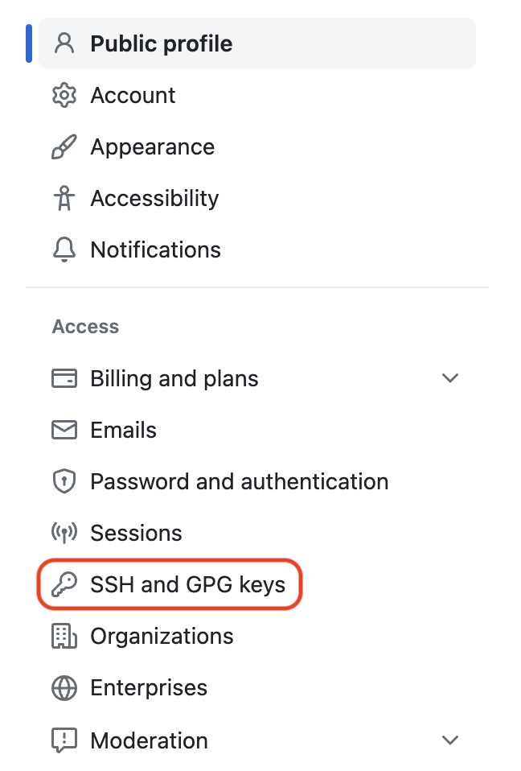
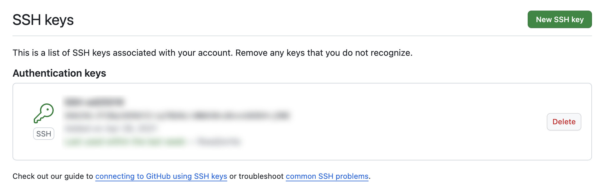
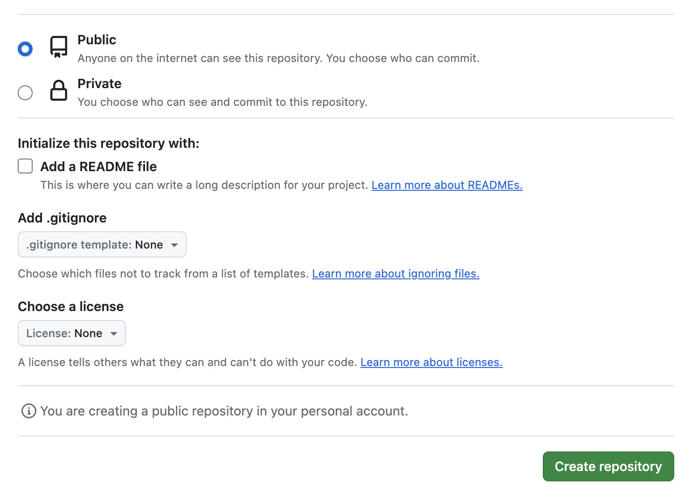

2. Git環境の設定#
Gitとは、プログラミングのソースコード等の更新履歴を管理するためのバージョン管理システム (VCS, Version Cotrol System)の一種です。バージョン管理システムにはGit以外にもSubversionやMercurialなどがある。
Gitを利用するには、
の2通りの方法が考えらるが、よほど機密性の高いソースコードを扱う等の場合でなければ、ウェブサービスを使う方法で問題ない。
本節では、GitHubを用いてGitレポジトリの作成とソースコードの管理を行う方法を紹介する。以下には非常に簡単なGitの使い方のみを紹介するので、必要に応じてウェブ上のチュートリアル (例えばAttlasian社のもの) などを読み込んでほしい。
2.1. Gitについて#
Gitは分散型バージョン管理システムであり、一つのプロジェクトに関連するコードを複数のユーザが別々に編集することを想定して設計されている。
Gitにおいては、ここのユーザが作成した変更がコミットという形で管理され、異なるユーザが作成したコミットをマージすることにより、コードを更新していく。
一方、Git以前に主流であったSubversionは中央集権的なバージョン管理システムであり、とあるユーザがソースコードを編集している間は、サーバ上のソースコードの更新がロックされるという仕組みであった。そのため、複数の異なるユーザが同時にソースコードを編集するようなプロジェクトには不向きであった。
現在、多くのソフトウェアプロジェクトは、システムの大規模化に伴い、複数のユーザで共同開発されるのが一般的になっており、Gitは現在のプログラミング・パラダイムにより即した仕組みであると言える。
Gitの特長
分散型であるために複数のユーザが同時にコードを編集可能
各ユーザの編集内容はローカル環境で「コミット」という単位で管理される
複数のユーザが行った編集が「マージ」されることでコードが更新されていく
2.2. GitHubアカウントの作成#
公式アナウンスに従ってアカウントを作成しよう。ユーザ名は変更できないので慎重に考えること。
https://docs.github.com/ja/get-started/quickstart/creating-an-account-on-github
2.3. SSHキーの登録#
2024年現在、GitHubのプライベート・リポジトリ上でソースコードを管理するためにはSSH (Secure Shellの略)を使用する必要がある。
Gitと同様、Mac/Linuxでは特別なインストールは必要なく、ターミナル上でssh --versionとタイプしてEnterを押すと、SSHのバージョンが表示される。
一方、Windowsの場合には、SSHの機能をOS付属のオプションから有効化する必要がある。詳細はMicrosoftの公式ガイドを参考にしてほしい。 https://learn.microsoft.com/ja-jp/windows-server/administration/openssh/openssh_install_firstuse?tabs=gui
SSHの用意ができたら、ssh-keygenコマンドを使ってSSHキーを生成する。SSHキーにはいくつかの種類があるが、今回はRSA暗号を用いた4096ビット長のキーを用いる。
ssh-keygen -r rsa -b 4096
すると、パスワードの入力を求められるが、今回はパスワードは設定しなくて良い (本当は設定した方が良いが、よく分からない場合は設定すると混乱する)。
ただしくSSHキーの生成が完了すると、ホームディレクトリ直下に.sshという名前のフォルダが作成され、そこにid_rsaとid_rsa.pubという2つのファイルが生成される。なお、.sshフォルダはMacやLinuxでは隠しフォルダ扱いで、単にlsとするだけではリストに現れないので注意すること (代わりにls -aを使う)。
このid_rsaとid_rsa.pubは前者が秘密鍵、後者が公開鍵と呼ばれる。公開鍵はその名前の通り、他の人が見られる場所に置いても良く、こちらがGitHubに登録する方のファイルになる。一方で、秘密鍵はその名前の通り、秘密の鍵なので、これは他の人に共有したりしないように注意しよう。
公開鍵id_rsa.pubをテキストエディタで開くか、catコマンドで内容を表示し、その内容をコピーする。
具体的には、GitHubの設定ページの左にあるメニューから「SSH and GPG keys」を選ぶ (下図参照)。
{kind=link}
現れる画面で「New SSH Key」ボタンを押す。すると、SSHキーの公開鍵の内容を入力するテキストボックスが現れるので、ここに先ほどコピーした公開鍵の内容をペーストする (下図参照)。
{kind=link}
ここまで完了したらローカル環境に戻り、シェルを開く。その上で、秘密鍵であるid_rsaのパーミッション (ファイルに対してどんな操作ができるかを制限する仕組み)を設定する。具体的には、自分以外のユーザは何もできず、自分も読み取りしかできないように設定する。
chmod 600 ~/.ssh/id_rsa
これでSSHキーの登録は完了なので、ローカル環境でシェルを開き、
ssh -i ~/.ssh/id_rsa git@github.com
と、コマンドを打ってEnterを押す。もし、SSH接続に成功すれば以下のメッセージが現れる。
Hi xxxx! You've successfully authenticated, but GitHub does not provide shell access. Connection to github.com closed.
もし、上記のようにSSH接続が上手くいかない場合には、GitHubへの公開鍵の登録に失敗している可能性があるので、もう一度内容をよく確認すること。
2.4. ローカル環境の準備#
2.4.1. Windows#
Windowsは、初期状態ではGit環境が用意されていないので、別途ソフトウェアをインストールする必要がある。
最も一般的なものはGit for Windowsなのだが、こちらを使う場合には、Gitコマンドに環境変数のパスを通すなど、余計な設定が必要になるため、インストールの際に注意が必要。
環境変数のパスを通す設定をし損ねた場合には、自分で環境変数のパスを通すか、(慣れないと使い勝手が悪い)Git Bashというシステムを使うことになる。
そこでおすすめしたいのが、PowerShell上で動く、ソフトウェア管理ツールであるChocolateyである。Chocolateyをインストールするための(おすすめ)手順は以下の通り。
オープンソース版のPowerShellをインストールする。
PowerShellを管理者権限で開き、Install Chocolateyのページ中段にある以下のコマンドを実行する。
Set-ExecutionPolicy Bypass -Scope Process -Force;
[System.Net.ServicePointManager]::SecurityProtocol = [System.Net.ServicePointManager]::SecurityProtocol -bor 3072;
iex ((New-ObjectSystem.Net.WebClient).DownloadString('https://community.chocolatey.org/install.ps1'))
PowerShellを開き、
choco list -lとタイプしてEnterを押す。正しくコマンドが認識されていれば、現在のChocolateyのバージョンが表示される。
ここまででChocolateyのインストールは完了なので、最後にChocolateyを使ってGitをインストールする (参考ページ)。
choco install git
インストール完了後、PowerShell上でgit --versionとタイプしてEnterを押す。正しくコマンドが認識されていれば、現在のGitのバージョンが表示される。
2.4.2. Mac / Linux#
特に準備をする必要はなく、ターミナルからgitコマンドが使用できる。念のため、ターミナルを開き git --versionとタイプしてEnterを押す。正しくコマンドが認識されていれば、現在のGitのバージョンが表示される。
2.4.3. ユーザ情報の設定#
Gitを用いるにあたっては、誰がソースコードの編集を行なったのかを識別するために、ユーザ情報を設定しておく必要がある。
登録が必要な情報はユーザ名とメールアドレスの2つで、これらの登録にはgit configコマンドを用いる。
このユーザ情報はリポジトリごとに別々のものを使用することもできるが、個人で開発を行なう場合には、全てのリポジトリに共通のものを使えば十分なので、git configコマンドに--globalオプションを追加して、次のようにする。
# ユーザ名の設定
git config --global user.name "Taro Yamada"
# メールアドレスの設定
git config --global user.email "taro.yamada@dokoka.no.daigaku.jp"
これらの情報はホームディレクトリ (シェルを実行すると最初に開くディレクトリ)にある .gitconfigという名前のファイル内に保存される。
2.4.4. GUIを通してGitを使う (非推奨)#
もしGUIを用いて、視覚的にバージョン管理を行いたい場合は、GitHub DesktopやSourcetree, GitKrakenなどが比較的使いやすい。
しかし、GUIを使っていると、なかなか融通が利かない部分もあり、またGitのコマンドをなかなか覚えないので、基本はターミナルからコマンドを実行することを強く推奨する。
Gitのインストール
WindowsはGit for Windowsをインストールするか、Chocolateyを使ってGitをインストール
MacやLinuxの場合には特段、インストールをしなくてもGitがインストールされている
Gitをローカル環境で操作する場合にはシェル環境 (PowerShellやターミナル等)を使うことを推奨
2.5. サーバ環境の準備#
Gitを用いてバージョン管理を開始するにはリポジトリを作成する必要がある。
本来、リポジトリを作成するには、Gitサーバ上でgit init --bareというコマンドを実行する必要があるのだが、GitHubを用いる場合には、ウェブ上の操作によりGitリポジトリを作成することができる。
まずは、各自のGitHubのトップページ (https://github.com/[ユーザ名])にアクセスし、右上の「＋」ボタンから「New Repository」を選ぶ (下図参照)。
{kind=link}
すると、以下のような画面が現れるので、まずは適当にリポジトリ名 (Repository name)を決める (ここではmy-first-repoとする)。なお、リポジトリ名には英数字と一部の記号しか使うことができないので注意すること。リポジトリの説明文 (Description)は後からでも容易に変更できるので、現時点では特に入力する必要はない。
次に、画面を少し下にスクロールすると、リポジトリの可視性と初期化オプションを決定する項目がある (下図参照)。
{kind=link}
リポジトリの可視性は、誰からでもアクセス可能な「Public」と、自分と指定したユーザのみがアクセス可能な「Private」がある。特にこだわりがなければ最初はPrivateにしておいて、ある程度、プログラムの開発が進んだ時点で「Public」にすると良いだろう。
最後のリポジトリの初期化オプションについては、リポジトリの説明を記述するREADME.md、無視するファイルを設定する.gitignore、そしてオープンソース・プロジェクトのライセンスをしていするか否か、を指定できる。それぞれの意味を理解しているなら指定しても構わないが、後からでも変更できるので、取り急ぎ指定する必要はない。
以上の設定を終了後、「Create repository」のボタンを押すと、リポジトリがGitHub上に作成される。
2.6. ローカル環境での操作#
2.6.1. リポジトリの作成#
ローカル環境でGitリポジトリを作るには、まず、ソースコードを保存するディレクトリを作成する。ここではディレクトリ名がmy-first-repoであるとして説明を進める。
ディレクトリの作成にはmkdirコマンドを用いる。
# ディレクトリの作成
mkdir my-first-repo
その後、ディレクトリ内に移動し、そこでGitリポジトリの初期化を行う。
# ディレクトリを移動
cd my-first-repo
# Gitリポジトリの作成
git init
すると、ディレクトリ内に隠しフォルダとして.gitというディレクトリが作られるのでls -aコマンドで、ディレクトリの存在を確認しておこう。
2.6.2. ソースコードの作成とステージ#
ローカル環境にGitリポジトリが作成できたら、次は実際にソースコードを作成しよう。上記のmy-first-repoディレクトリを開き、その中にmain.pyという名前のファイルを作成する。内容は以下のようなもので良いだろう。
def main():
print("Hello, world!")
if __name__ == "__main__"
main()
上記の内容をファイルに書き込んだら、保存をしてシェル環境に戻ろう。
このファイルをGitリポジトリの管理対象に含めるにはステージという操作が必要になる。まずはgit statusコマンドで、現在のリポジトリの状態がどうなっているかを確認しよう。
git status
すると、以下のようにmain.pyがGitの管理対象に入っていないことを示すコメントが表示される。
Untracked files:
(use "git add <file>..." to include in what will be committed)
main.py
このコメントを注意深く読んでみると、ファイルをGitの管理対象に含めるにはgit addというコマンドを使えば良いことが分かこのコメントに従い、次のコマンドでmain.pyを管理対象に含めよう。
git add main.py
このコマンドを実行後、再度 git status で現在のリポジトリの状態を確認すると、今度は次のようなコメントが表示される。
Changes to be committed:
(use "git rm --cached <file>..." to unstage)
new file: main.py
コメントには"Changes to be committed"とあり、ここで次に説明するコミットを実行すると、ファイルの状態がGitリポジトリ上で管理されるであろうことが確認できる。
2.6.3. コミット#
ファイルがステージできたら、これをローカル環境でファイルの変更をに反映する必要があるのだが、これを実行するコマンドがコミット (git commit)である。
コミットはローカル環境で行ったソースコードの更新をローカル環境の上に記録する操作を指す。この際、コミットは何回にも分けることができ、コミットを行うごとに、その時のソースコードの状態 (より具体的に言えば、直前のコミットからの差分情報) が保存される。
また、各コミットにはコメントをつけることができ、そのコメントによって、ファイルに対して行なった編集がどのようなものかを判別可能にできる。コミットとコメントの付与を同時にシェル環境で実行するには、-m (mはmessageの頭文字)をオプションに指定して、次のようにする。
git commit -m "This is the first commit on this repo."
もし、ここまでのコマンドを正しく実行できていれば、コミットが完了した旨のメッセージが表示される。コミットが正しく実行されているかを確認するには、
git log
を実行する。git logはこれまでのコミットの履歴を確認するコマンドであり、今行なったコミットの内容が先頭に表示されるはずだ。
2.6.4. プッシュ#
コミットが完了したら、次はコミットの内容をリモートのGitサーバに反映する。そのためのコマンドがプッシュ (git push)である。
プッシュを行なうには、まず、リモートサーバのURLに名前をつける必要がある。通常は、サーバ名をoriginとすることが多く、git remoteコマンドを用いて、次のようにサーバURLを設定する。
# Gitサーバにoriginという名前をつけてURLを設定
git remote add origin git@github.com/XXXX/my-first-repo.git
次に、プッシュ先のブランチを決める必要がある。ブランチというのは、Gitリポジトリ下におけるソースコードの管理を分割する仕組みで、例えば、とあるブランチに置かれているソースコードは正しく実行できるものとしておき、ソースコードの改変を伴う開発は別のブランチで行なう、というような使い方ができる。
ただし、個人で開発を行なっている場合には、それほど意識する必要はなくブランチを1つだけ使って開発を進めても、それほど大きな問題はない。通常、更新対象のメインとなるブランチはmainあるいはmasterという名前をつけられることが多く、ローカル環境ではそのいずれかのブランチがすでに作成されている。
現在のブランチを確認するには、次のコマンドを実行する。
git branch
すると、現在、更新対象となっているブランチにはアスタリスクがついていることが確認できる。このブランチの名前を覚えておこう。
ブランチの名前が分かったら、リモートサーバの名前とブランチ名の両方を指定して、次のプッシュコマンドを実行する。
git push origin master
これでプッシュは完了で、正しく実行できていれば、GitHubのリポジトリページにソースコードがアップロードできていることが確認できる。